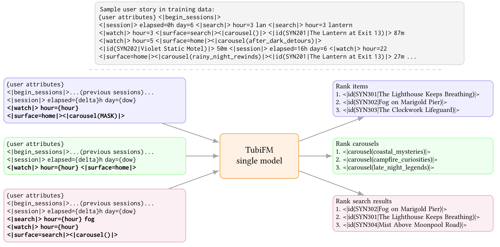
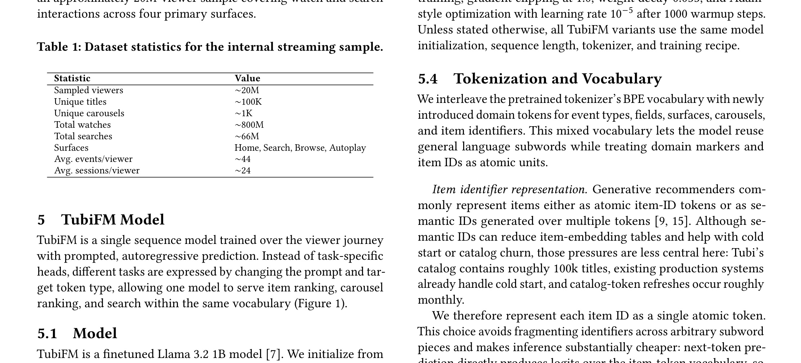

TubiFM: Unified Item, Carousel, and Search Ranking for Streaming Discovery：统一流媒体 Item、Carousel 与 Search Ranking 的 User Story 模型
论文入口：arXiv:2605.23702。作者：Alexandre Salle, Chenglei Niu, Suchismit Mahapatra, Xiaoxiao Chen, Suvash Sedhain, Yaqi Wang, Shervin Shahryari, Saurabh Agrawal, Qiang Chen, Michael Tamir。机构口径：Tubi / Fox 相关团队，作者来自 Porto Alegre、San Francisco、Beijing 等团队。代码/项目页状态：未核验到独立开源仓库；线上结果以论文报告为准。主类别：推荐算法；公开日期：arXiv submitted 2026-05-22。
把用户观看、搜索、surface、carousel 和候选任务序列化为 user story，用同一个 Llama 3.2 1B 风格模型统一 item、carousel 与 search ranking。 本笔记按当前流水线的精读要求重写：先记录公式清单、方法模块清单和图表清单，再围绕论文原文的任务设定、训练/推理链路、实验表和工程边界展开。
1. 背景和问题
TubiFM 解决的是流媒体发现系统里的多 surface 排序问题。首页 item ranking、carousel ranking 和 search ranking 往往由不同模型、不同特征和不同训练样本维护。这样做短期有效，但跨 surface 的用户兴趣很难共享：用户在 search 里表现出的意图未必能进入首页排序，carousel 上的上下文也不一定能帮助 item ranking。TubiFM 的做法是把用户旅程序列化为 user story，让同一个模型通过不同 prompt 切换任务。
论文的关键不是简单让 LLM 做 reranker，而是把语言 token 和领域事件 token 混在同一个序列里。一个 user story 可以包含 session 分隔、观看事件、搜索词、surface、carousel id 和 item id；模型看到 prompt 后，需要预测或打分相应任务的候选。这样，item、carousel、search 不再是三个孤立任务，而是同一段用户历史上的不同读出方式。
这类方法与大模型个性化也有相通之处。RAG 或 agent 系统常把用户记忆、工具轨迹和当前任务拼成 prompt；TubiFM 则把推荐系统中的行为历史转成模型可读的故事。两者都面临相同问题：哪些事件要保留，如何截断，训练和线上是否使用同一序列化器，长历史会不会强化热门内容和位置偏差。
更具体地说，TubiFM: Unified Item, Carousel, and Search Ranking for Streaming Discovery 的问题不应被读成单点模型改进，而应读成系统状态如何被建模、验证和服务化。旧链路通常把关键状态分散在人工规则、离线日志、缓存、业务策略或一次性 prompt 里，最终只能看到平均指标，却无法解释指标变化来自哪里。本文把这些状态拉回可观察接口：输入是什么，输出是什么，何时训练，何时推理，失败时如何定位。
这也是它和今天其他论文共同的地方：LLM 方向在处理 skill、memory、context，推荐方向在处理 user story、retriever distillation 和 generative backbone。它们都说明模型能力越来越依赖外部状态管理。阅读这篇论文时，我会持续追问三个问题：第一，论文是否明确记录了状态来源；第二，方法是否有独立验证或对照；第三，结果是否足以支持生产迁移，而不是只在某个离线表里好看。
补充背景时，TubiFM 的“统一”不应被理解成简单合并三个模型。流媒体产品里的 item、carousel、search surface 有不同用户意图：用户在首页可能是探索，在搜索页可能有明确 query，在 carousel 中又受到容器主题影响。传统 specialist 模型能针对各自目标优化，但维护成本高，而且跨 surface 的兴趣信号不容易流动。TubiFM 的 user story 试图让这些行为在同一序列里相互解释。
这篇论文的难点在数据协议。用户行为日志原本可能分散在播放、搜索、推荐曝光和页面容器系统中。要把它们序列化成 story，就必须统一时间粒度、surface 命名、carousel 标识、item token 和 session 边界。任何字段在训练和线上不一致，都会破坏模型。
从大模型角度看，TubiFM 是把推荐日志变成一种 DSL。它没有让 LLM 自由生成自然语言，而是让模型在受控 token 空间里理解用户旅程、然后对候选对象打分。这比开放式 conversational recommender 更贴近生产排序。
背景还要看到统一模型背后的组织成本。多个 surface 各自维护模型时，特征定义、训练样本、评估指标和上线节奏都会分裂。TubiFM 试图用 user story 统一输入，让不同团队至少共享一套用户行为表示。即使最终仍保留 specialist 模型，这套 story 也可以成为跨场景分析资产。
背景还要补充一点：TubiFM 的统一模型不仅服务推荐质量，也服务产品体验一致性。用户在 search 中表达的意图，如果无法影响首页和 carousel，产品会显得割裂；用户在首页反复忽略某类内容，如果 search ranking 完全不知道，也会浪费反馈。User story 让这些信号至少进入同一表示空间。
补充背景：跨 surface 统一还会改变评估文化。过去每个 surface 只对自己的指标负责，统一模型上线后，一个 surface 的训练样本可能影响另一个 surface 的体验。因此评估需要从单任务 owner 转向跨任务 dashboard。
2. 方法
方法章是本笔记的主体。先列公式和图表清单，再按论文真实模块解释训练与推理链路。主文对象包括 Figure 1 的 prompted formulation 示例、Table 1 的内部 streaming 样本统计、Table 2 的三任务离线主结果、Table 3 的初始化消融、Table 4 的粗粒度属性消融、Table 5 的 session segmentation 消融、Table 6 的线上 A/B 结果。本文截图保留 Figure 1 与主结果表，消融和线上表在实验章解释。
2.1 公式清单与方法地图
prompted 排序分布。
符号解释：u 是用户跨 surface 历史，c 是候选上下文，t 是任务类型；Story 与 Prompt 把异构行为转为统一输入。此式是笔记对论文文字目标的实现化表达，原文主要用 prompt 样例说明。 这条公式在笔记中的作用是把论文描述转成可检查变量，复现时应能在数据、日志或配置中找到对应字段。
全词表候选打分。
符号解释：item、carousel 或 search result 被映射为领域 token，排序时比较候选 token 的 next-token 概率。 这条公式在笔记中的作用是把论文描述转成可检查变量，复现时应能在数据、日志或配置中找到对应字段。
随机 masking。
符号解释：训练时随机 mask surface/carousel 特征，使模型既能利用上下文，也能在上下文缺失或 container-independent ranking 中工作。 这条公式在笔记中的作用是把论文描述转成可检查变量，复现时应能在数据、日志或配置中找到对应字段。
服务延迟目标。
符号解释：论文在线部分报告 p99 延迟从 500ms 量级优化到 200ms 量级；这是服务部署指标，不是训练 loss。 这条公式在笔记中的作用是把论文描述转成可检查变量，复现时应能在数据、日志或配置中找到对应字段。
2.2 论文核心流程
TubiFM 的输入层是 user story。论文给出的样例包含 session 标记、elapsed time、day of week、watch event、search event、surface、carousel 和 item id。这个设计把推荐日志从宽表特征改成事件序列。宽表特征强调当前请求的字段，事件序列强调用户旅程的时间顺序。对于 streaming discovery，用户刚搜索过的关键词、刚看过的节目、当前所处 surface 和 carousel 语境都可能影响下一次点击或观看。
领域 token 是第二个关键。TubiFM 不只使用自然语言词，也引入 item、carousel、surface 等 domain event tokens。这样模型可以在同一 vocabulary 中处理文本搜索词和离散业务对象。优点是多任务共享更自然；缺点是 token vocabulary、item 更新和冷启动都变复杂。若一个新 title 刚上线，系统需要给它稳定 token 或语义表示，否则生成式打分无法覆盖。

补充看这张图时，重点是 user story 与 prompt 的解耦。同一段用户历史和上下文可以服务 item ranking、carousel ranking 或 search ranking，差异由任务 prompt 指定。这个设计让模型共享用户和内容表征，同时保留不同业务 surface 的目标差异；如果没有 prompt 这一层，统一模型很容易把多个排序任务混成一个平均目标。
这张图展示了 TubiFM 的核心抽象：同一段 user story 不变，prompt 改变，排序任务随之改变。图中 user story 不是简单的观看列表，而是包含 session、search、surface、carousel 和 item 的混合 token 序列。它说明模型需要同时理解时间、入口、容器和内容语义。对工程实现来说，图里的每个 token 都应映射到稳定字段：时间如何离散化、surface 如何命名、carousel id 是否可泛化、item token 如何处理冷启动。若这些字段在训练和线上不一致，prompted formulation 的优势会迅速消失。
2.3 训练目标与优化控制
Prompted formulation 负责切换任务。相同 user story 后接不同 prompt，模型就执行 item ranking、carousel ranking 或 search ranking。这里的 prompt 不是给用户看的自然语言指令，而是服务系统内部的任务标记。它把“当前要排什么”显式传给模型，使一个共享 backbone 能在多个 surface 上复用历史理解。
训练语料由内部 streaming 样本构成。Table 1 记录数据规模和任务构成。训练时，模型需要同时看到观看、搜索和 surface 上下文，并用 next-token 或候选打分目标学习。论文还使用 stochastic masking：随机隐藏 surface/carousel pair，让模型不要过度依赖某个容器信息。这一点对线上很重要，因为有些任务需要 container-dependent ranking，有些任务则希望模型在缺少 carousel 上下文时也能工作。
2.4 推理链路、服务约束与系统接入
推理阶段和训练阶段存在差异。训练时模型可以从完整历史中学习 next-token pattern；服务时系统必须把候选集合、user story、prompt 和延迟预算放在一起。TubiFM 不是开放生成推荐列表，而是在候选上做 ranking。服务侧需要构造 prompt、计算候选 token 分数、做缓存或 batching，并保留 fallback 到旧系统的能力。论文提到 L40S 部署和 p99 延迟优化，说明线上约束是方法设计的一部分。
TubiFM 的方法风险也来自统一建模。统一模型可能提高跨任务共享，但也可能把不同 surface 的目标混在一起。search ranking 更依赖 query 语义，carousel ranking 更依赖容器上下文，item ranking 更依赖长期偏好。如果训练目标和采样比例没有平衡，模型可能在某一任务上收益明显，在另一任务上只达到统计中性。
2.5 复现时应检查的实现细节
复现 TubiFM: Unified Item, Carousel, and Search Ranking for Streaming Discovery 时，应把论文模块拆成可观测的输入、输出、训练目标、推理路径和失败样本。每个模块都要记录数据来源、版本、延迟、成本、可回滚策略和与基线的差异。只有这些信息完整，论文结果才有本地迁移价值。
2.6 模块间信号流与落地检查
User story 的设计需要同时保留时间和场景。论文样例中有 elapsed hour、day of week、watch hour、search term、surface、carousel 和 item id。时间字段让模型知道事件间隔，surface 字段让模型区分首页、搜索等入口，carousel 字段提供容器语义，item id 连接具体内容。
Prompt 的作用是任务选择器。对于同一段 story，item prompt 要求模型给内容排序，carousel prompt 要求模型给容器排序，search prompt 要求模型给搜索结果排序。这个设计让多任务共享 backbone，但不会把任务边界完全抹掉。
训练时的 stochastic masking 很关键。若模型过度依赖 carousel id，它可能只学到容器历史，而不能处理新容器或缺失上下文。随机 mask surface/carousel pair 可以让模型在完整上下文和缺失上下文两种情况下都学习。这个机制类似推荐特征 dropout，但作用在序列 token 上。
候选打分阶段需要受控输出。TubiFM 并不是让模型生成任意 title，而是服务系统提供候选，模型对候选 token 计算概率或得分。这样可以接入现有召回、版权过滤、可播性过滤和策略层，也避免生成不存在或不可播放的 item。
线上服务还需要缓存和 batching。Llama 3.2 1B 量级模型比传统 ranking model 重，必须通过候选裁剪、prompt 编码缓存、GPU batching 或专门 serving 优化控制 p99。论文提到 L40S 和 p99 延迟，就是在说明统一模型要接受推荐系统的低延迟约束。
实现时还要处理 token 更新。流媒体 title、carousel 和搜索热词会变化，domain token vocabulary 必须支持新内容。若每次新增 title 都要大规模重训，系统不可维护；若用语义或属性 token 补充，冷启动会更稳。论文没有完全展开这一点，因此本地复现应把新 item 作为重点分桶。
User story 的截断策略会显著影响模型。保留最近事件可以捕捉短期意图，保留长期高价值事件可以捕捉稳定偏好。流媒体场景里，一个用户可能长期喜欢某类节目，但当前 session 正在搜索特定主题。序列化器需要平衡长期偏好和短期意图，不能只按时间简单截断。
Item token 的表示也有两种路线：纯 ID token 记忆具体内容，语义 token 帮助泛化。TubiFM 使用混合语言和领域 token，说明它希望同时利用文本语义和行为共现。新内容冷启动时，纯 ID token 没有历史，语义属性和 coarse attribute 就更重要。
Prompt 设计要避免任务泄漏。若 prompt 太接近某个 surface 的训练标签，模型可能只学会模板；若 prompt 太弱，模型又不知道当前要排序什么。较好的 prompt 应明确任务、候选类型和上下文边界，同时保持不同任务格式一致，方便共享 backbone。
训练采样比例也很关键。Search 事件通常比观看事件少，carousel 决策又有自己的曝光偏差。如果按原始频次训练，模型可能被高频 item ranking 主导；如果过采样 search，又可能伤害首页体验。论文没有完全公开采样策略，本地复现必须把任务采样作为超参数。
线上服务中，TubiFM 应处于多路系统的一环。候选生成、版权过滤、策略过滤、多样性控制和 fallback 仍由推荐系统负责；TubiFM 给候选打分或提供统一语义特征。这样即使模型在某个 surface 出现异常，也可以回退到旧 specialist。
监控上要同时看任务指标和跨 surface 副作用。比如 search TVT 上升但首页多样性下降，或者 carousel 点击上升但内容重复增加，都需要单独处理。统一模型可能让一个 surface 的偏差传播到另一个 surface。
序列化器需要明确事件优先级。观看完成、短暂停留、搜索 query、点击 carousel、退出页面的信号强弱不同。TubiFM 论文样例使用 watch 和 search 等事件，但复现时应进一步决定每种行为是否进入 story、如何排序、是否加权。低质量事件太多会稀释真正偏好。
候选集合也必须和训练目标匹配。若训练时模型看到真实点击后的 item token，推理时却要在召回候选中排序，负样本和候选分布就很重要。TubiFM 的 offline results 需要结合候选构造理解；不同候选池会改变 ranking 难度。
Domain event token 的生命周期是生产难点。Carousel id 可能经常变化，item id 会新增下架，search query 是开放文本。系统需要为稳定实体使用专门 token，为长尾或新实体使用文本/属性表示。否则 token vocabulary 会膨胀，模型更新成本会变高。
多任务训练还需要 loss 权重。Item、carousel、search 的样本数和业务价值不同，统一 next-token objective 可能被高频任务主导。一个更稳的实现会按任务设置 sampling ratio 或 loss weight，并在验证集上分别监控每个任务，而不是只看混合指标。
推理时的 prompt 应与评估指标绑定。Search prompt 应更关注 query relevance，carousel prompt 应关注容器主题和多样性，item prompt 应关注观看概率或时长。若三个 prompt 只换一个 token，而指标目标差异很大，模型可能无法充分表达业务差异。
最后，fallback 很重要。统一模型上线不应一次性替代旧排序，而应先作为 re-ranker 或辅助特征，旧 specialist 保留兜底。若某 surface 指标退化，可以局部关闭 TubiFM，而不影响其他 surface。
TubiFM 的方法还应补充曝光反馈处理。User story 里只放观看和搜索是不够的，未点击曝光、快速划走、重复曝光后的疲劳也会影响排序。问题在于负反馈比正反馈噪声更大，直接放入序列可能让模型学到位置偏差。更稳妥的做法是用专门 token 标记高置信负反馈，并在训练时控制其采样权重。
多 surface 统一还需要防止标签泄漏。比如 search 后的观看行为可能很强地关联 query，如果训练样本构造不严，模型可能在离线评估中看到过于接近目标的后验信息。User story 应只包含排序时点之前可用的事件，并严格按时间截断。
最后，TubiFM 的 serving 需要明确 candidate scoring 的粒度。若候选数量很大，对每个候选都做 LLM forward 会太贵；可以先用传统召回和轻量排序缩小候选，再由 TubiFM 重排 top-k。这个位置决定了它的成本和收益。
方法章还可以补一个线上特征一致性检查。TubiFM 的 story 里包含很多训练时容易获得的字段，但线上请求到达时不一定全部可用。每个 token 类型都应标注 online-available、offline-only 或 delayed-available。offline-only 字段不能进入推理 story；delayed-available 字段只能用于训练或异步缓存。这个检查能防止离线评估高估。
还要记录 story 版本。序列化协议一旦变化，模型输入分布也会变化。生产系统需要给每条训练样本和线上请求写入 story_schema_version，这样才能比较模型效果和回滚。若没有版本号，后续很难解释 A/B 变化是模型变化还是序列化变化。
方法章再补充一个数据防偏设计。User story 中的观看事件本身受旧推荐系统影响，热门 carousel 和首页位置会被过度代表。如果直接训练，TubiFM 可能学到旧系统偏差。可以加入曝光位置、surface、carousel source 等 token，并在训练或评估中做分桶，至少让模型知道行为发生的展示环境。
对于 search，query 文本和 item 文本的语言处理很重要。用户可能拼写错误、使用别名或输入模糊短语。TubiFM 的语言初始化可能帮助 search ranking，但也要避免把搜索收益误归因给跨 surface user story。实验应把 query 难度、query 长度和无命中 query 分开。
对于 carousel ranking，模型要理解容器不是 item 集合的简单平均。Carousel 有主题、排序位置和运营意图。若 user story 只包含 carousel id 而没有主题或候选组成，模型可能难以泛化到新 carousel。
TubiFM 的方法难点在于把 foundation model 的表达能力约束在推荐系统可服务的形态中。若直接让大模型生成候选内容，系统会遇到延迟、缓存、审核和候选集覆盖问题；论文选择把大模型能力转化为可预计算、可索引、可与现有召回/排序链路拼接的表示。这个选择降低了模型自由度，却换来了工程可控性，也使离线表征学习与在线排序指标之间有可调试的接口。
复现时需要把用户侧序列、内容侧元数据和任务 prompt 三者的边界拆清。用户历史提供偏好迁移信号，内容元数据提供冷启动和语义泛化信号，prompt 则定义当前优化目标，例如点击、观看时长或继续观看。若把这些信号简单拼接，模型可能学到数据泄漏或热门度捷径；更稳妥的做法是分别记录特征来源、时间戳和可见性，并在训练样本构造时只允许使用决策时刻之前可获得的信息。
3. 实验结果
实验章按证据链阅读，而不是只摘最高指标。TubiFM: Unified Item, Carousel, and Search Ranking for Streaming Discovery 的实验对象包括主结果、消融、效率或线上/影子评估；每一类结果都要和论文主张一一对应。
3.1 实验设置与主结果
实验覆盖离线三任务和线上 A/B。Table 2 是主离线结果，比较 item、carousel 和 search ranking 的指标。阅读时不能只看整体平均，因为三类任务的业务含义不同：item ranking 关系到具体内容点击或观看，carousel ranking 关系到容器选择，search ranking 关系到 query 后的结果质量。论文指出 TubiFM 在 search 上收益更明显，而 item TVT 为 statistically neutral，这说明统一模型并不是在所有 surface 上全面替代 specialist。
Table 3 的初始化消融考察模型从通用 Llama 初始化、领域训练或其他初始化方式出发的差异。对于推荐模型，初始化决定语言理解和领域 token 学习的平衡。如果通用初始化帮助 search query，但对 item id 记忆帮助有限，就需要额外领域预训练或 token adapter。

补充看主结果表时，应按任务类型分开看收益。item ranking 主要考察个体内容相关性，carousel ranking 还涉及集合和位置语义，search ranking 则受 query 意图约束。TubiFM 若在三类任务上都优于专用或传统基线，说明 user story 表征没有只服务单一场景，而是真正提供了跨 surface 的统一建模能力。
这张主结果表应在实验章解读。它按 item、carousel、search 三个任务分别列出离线指标，因此读表时要先分任务，再看同一任务内的 baseline 差异。若 search 指标提升最大，说明语言 token 和 query 语义对统一模型帮助更明显；若 carousel 指标也有提升，才说明 user story 捕捉到跨 surface 偏好。表中的 statistically neutral 结果同样重要，因为它提醒我们统一模型的价值可能是维护效率和跨任务共享，而不是每个任务都刷新最高精度。
3.2 消融、效率和分桶证据
Table 4 的 coarse attribute ablation 检查用户属性、内容属性或上下文字段是否有贡献。这个表对复现很有价值，因为它能回答 user story 哪些字段真正有用。若删除 surface 或 carousel 信息后 carousel ranking 下降，说明容器上下文不是装饰字段；若删除粗粒度属性影响不大，可以减少线上特征依赖。
Table 5 的 session segmentation 消融说明时间结构的重要性。没有 session 分隔时，模型难以区分连续观看、隔天返回和搜索后观看。流媒体用户兴趣具有强会话性，同一用户在不同时间段可能有完全不同意图。Session token 因此不仅是格式标记，也是偏好解释边界。
3.3 结果边界与复现风险
Table 6 的线上 A/B 是证据等级最高的部分。论文报告线上 TVT lift 和 p99 延迟从 500ms 量级到 200ms 量级的优化。线上结果需要谨慎理解：TVT、点击、搜索成功和多样性可能方向不完全一致；延迟优化也可能依赖硬件、batching、缓存和 fallback。即便如此，能把统一模型放到真实 streaming discovery 流量里，说明方法不是纯离线研究。
补充实验时，Table 1 的数据统计很重要。它说明训练样本来自内部 streaming 场景，外部无法直接复现。因此我们读结果时要关注趋势和方法结构，而不是把数值外推到所有推荐系统。
Table 2 的三任务主结果要按任务拆开。Search 场景可能最受益于语言 token 和 query 语义；carousel 场景更依赖容器上下文；item 场景可能受已有 specialist 模型强度影响。若某任务只达到 neutral，说明统一模型的价值需要从维护成本、跨任务共享和线上实验综合判断。
Table 3/4/5 的消融分别回答初始化、属性和 session segmentation 的问题。它们比主结果更能指导复现：如果 session segmentation 贡献大，说明时间结构必须保留；如果 coarse attributes 贡献有限，可以简化输入；如果初始化影响强，说明领域预训练不可省略。
实验还应关注 online 与 offline 的差异。离线 ranking 指标通常基于历史曝光，容易继承位置偏差；线上 A/B 才能看到用户是否真的改变观看行为。Table 6 因此是关键证据，但它仍需要分桶：新用户、重度用户、搜索用户、冷启动内容和长尾内容的收益可能不同。
消融表可以直接指导工程优先级。如果 session segmentation 贡献最大，先投资会话切分；如果 initialization 贡献最大，先改预训练；如果 coarse attributes 贡献有限，可以减少复杂字段。不要只把消融看作论文补充，它实际是迭代路线图。
实验还可以从“统一是否带来负迁移”角度读。若 search 提升而 item neutral，可能是 search 从语言模型获益更多，也可能是 item 任务受到多任务共享的稀释。消融表应结合任务权重和样本比例看，不能简单说统一模型对所有任务都好。
线上 A/B 的 p99 延迟改进也要和质量一起看。500ms 到 200ms 说明服务优化明显，但流媒体首页推荐的可接受延迟仍取决于页面加载链路。若模型需要 GPU 服务，QPS、batching 和缓存失效策略都要进入实验报告。
实验上还要关注 diversity 和 novelty。统一 user story 可能更擅长重复用户熟悉内容，但 streaming discovery 也需要新内容探索。离线指标如果只看历史点击或观看，可能低估探索价值。
线上 A/B 应分新用户、老用户、搜索活跃用户和只看首页用户。不同用户群对跨 surface 共享的收益不同，平均 TVT 可能掩盖负迁移。
实验上，建议补充 schema ablation。除了论文已有字段消融，还应比较不同截断长度、不同时间桶、不同负反馈 token 和不同任务采样比例。
实验补充：TubiFM 的线上指标若只报告总体 TVT，还不足以判断探索能力。应加入新内容曝光、长尾 title watch、重复推荐率和搜索后满意度分桶。
在线 A/B 的解释也要结合延迟结果看。表 6 中 p99 从 500ms 降到 200ms 不只是系统优化指标，它直接决定该模型能否进入高流量推荐链路。若离线收益依赖很重的推理或复杂重排，生产系统可能只能在小流量场景使用；TubiFM 的贡献之一是把语义增强和服务预算同时纳入评估。
4. 总结
4.1 我的判断
我的判断是，TubiFM 是推荐 foundation model 在工业 streaming 场景里很值得跟踪的一条路线，但它的短期落地重点应是统一输入协议，而不是立即替换所有排序模型。先把推荐、搜索、carousel 日志序列化成 user story，检查字段覆盖、缺失率和线上可用性，比训练大模型更重要。
4.2 工程启发与复现建议
工程启发包括：跨 surface 排序需要共享用户旅程；prompt 可以作为内部任务路由信号；domain token 和 language token 的统一能连接搜索语义和观看行为；stochastic masking 可以提升特征缺失时的鲁棒性。
4.3 局限与后续跟进
局限包括：候选生成和负采样细节未完全公开；item TVT neutral 说明统一模型不总是优于 specialist；跨 surface story 可能放大曝光偏差和热门内容强化；p99 延迟依赖硬件和服务工程；新 title token 与冷启动仍需额外机制。后续应复现 user story serialization、拆解 search 收益来源、比较 task-specific 与 unified 模型、加入长尾和新内容分桶，并关注 Tubi 是否公开 tokenization 或技术博客细节。
后续复现我会先做 user story 数据审计：统计每类事件覆盖率、序列长度分布、缺失字段、跨 surface 用户比例和线上可用字段占比。只有协议稳定后，再训练小模型比较 unified 与 specialist。验收指标应包含观看时长、搜索成功、多样性、长尾曝光、新内容曝光和 p99 延迟。
后续我会把 TubiFM 的复现拆成两个阶段。第一阶段只做 story schema 和离线小模型，验证跨 surface 信号是否共享；第二阶段再把统一模型作为旧排序的辅助特征做 shadow。若第一阶段发现字段缺失严重或任务互相干扰，就不应贸然训练更大模型。
总结补充：我会把 TubiFM 后续跟进重点放在 tokenization 和 online serving 细节。没有这两块，论文思路难以复现。若未来 Tubi 公开技术博客，应优先看 user story schema、候选打分方式和 A/B 分桶。
最终我会把 TubiFM 标为“先做协议后做模型”。如果 user story schema、时间截断和候选打分协议没定好，扩大模型规模只会放大数据问题。
总结上，TubiFM 的最大价值可能不是立刻提高所有指标，而是建立跨 surface 的统一用户行为语言。